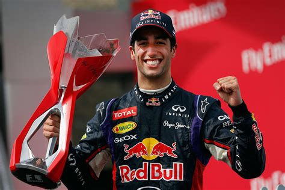
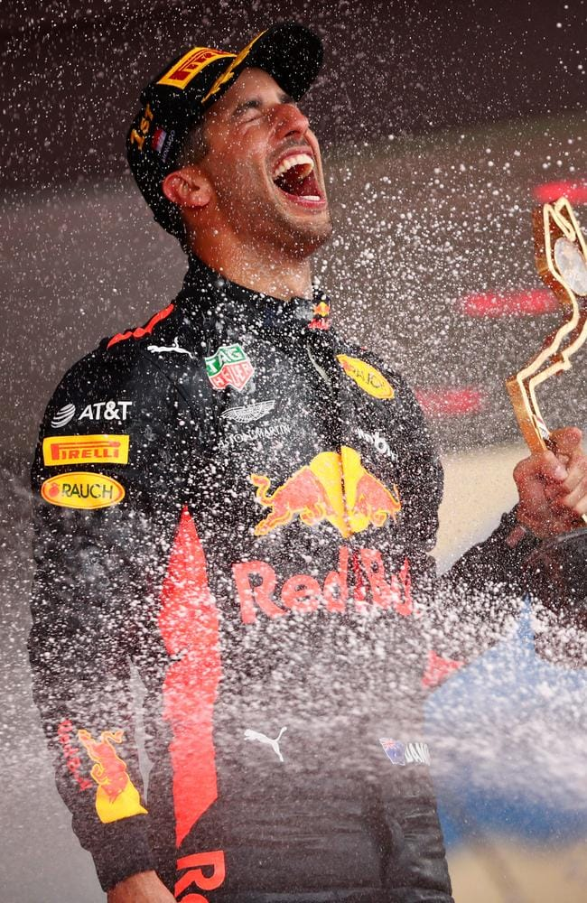
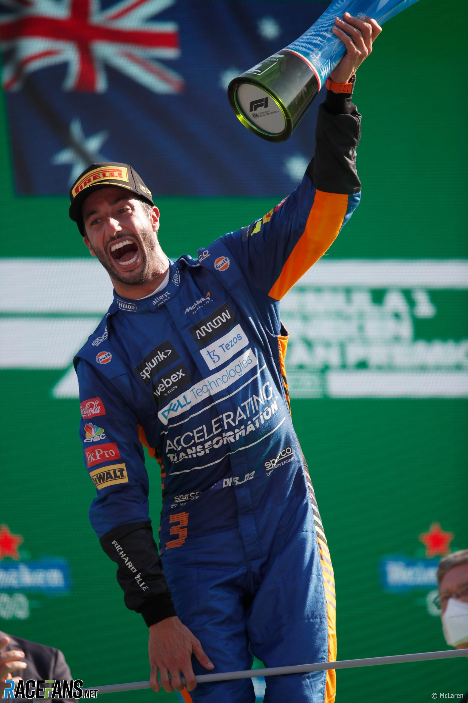
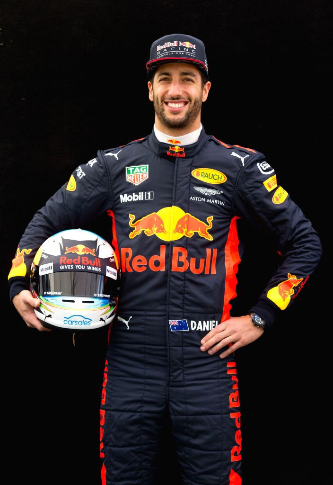
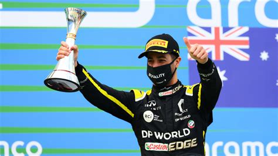

Achievements

2014 Canadian Grand Prix Winner
Daniel's first F1 victory, a pivotal moment in his career.

2016 Three-Time Race Winner
One of the most successful seasons for Daniel, showcasing his skills with wins in Spain, Monaco, and Malaysia.

2021 Italian Grand Prix Winner
Secured McLaren's first victory since 2012 in an exhilarating race.

Most Race Starts by an Australian Driver
As of 2024, Daniel holds the record for the most Formula 1 race starts by an Australian driver.

Numerous Podium Finishes
Ricciardo has over 30 podium finishes throughout his career, showcasing consistent performance.